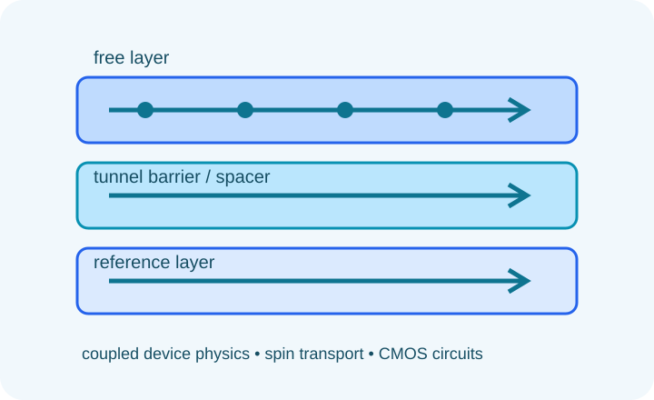
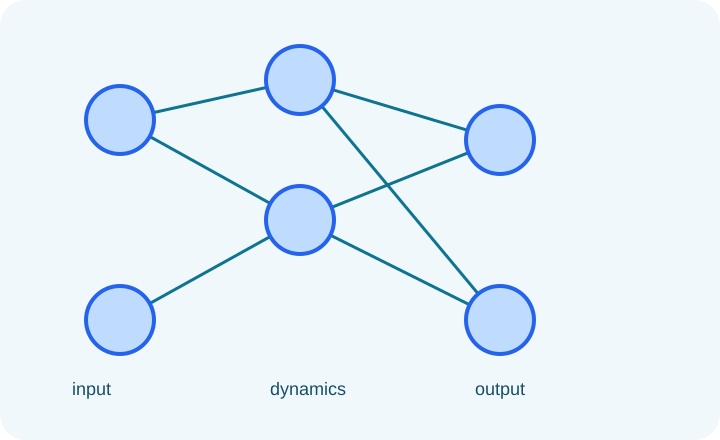

Nano-bio-optoelectronic interfaces
Investigating novel optoelectronic device geometries for biological sensing at tissue level, including physical modelling and electrical characterization. Related directions include wireless nanoscale biosensors, low-power transduction, and intelligent biocompatible sensing architectures.

Spintronics, magnonics & CMOS–MTJ
Compact and equivalent-circuit models for spin-transfer torque, spin Hall effect, spin valves, magnetic tunnel junctions, and spintronic logic. Current interests include LLG dynamics, micromagnetic and spin-wave models, nonlinear spin-wave dynamics, magnon interactions, and engineered propagation.

Quantum optics & nanophotonics
Cavity-QED and multilevel quantum systems; photon–matter interaction, state evolution, coupling and control; quantum optomechanical systems; photonic crystals, plasmonic and metamaterial structures; and quantum photonic communication.

Optical hardware security
Plasmonic physically unclonable function devices, nanodiamond-based quantum optical PUFs for biomedical sensor security, and chaotic-resonator nonlinear optical PUFs for photonic hardware cryptography.

Intelligent & unconventional computing
Physics-informed learning and inverse-design approaches for photonic, metamaterial, spintronic and neuromorphic hardware. Interests include 2D spintronic and magnonic structures for logic and sensing-based information processing.

Computational medicine & neurotechnology
Computational pathology and cancer detection, pulmonary imaging, bioelectric and bioelectromagnetic signal analysis, gait and physiological time series, and RF/integrated-circuit architectures for low-noise neural interfaces.